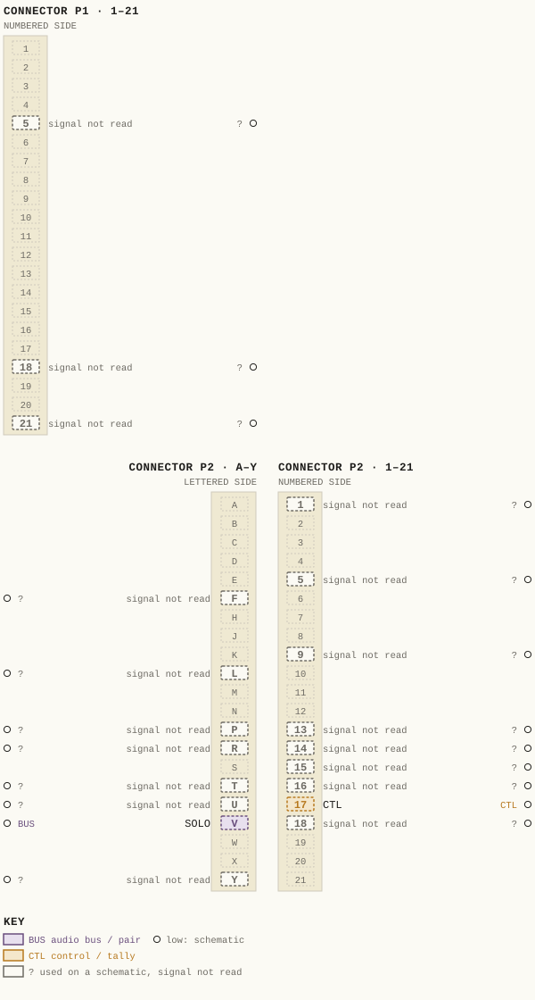
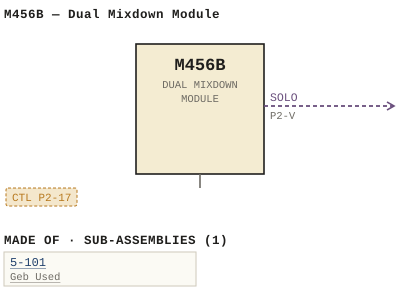

M456B — Dual Mixdown Module
| Type | module |
| Category | ROUTING |
| Try it | simulator & front panel · download package (zip) |
| Earliest dated evidence | 1975|8 — title-block date |
| Evidence | "DATE FEB 75" in PUBLIC/Manuals + tech DOCUMENTS/Modules/M456B - Dual Mixdown Module/M456B - P030 - B5-101-06-001 R.jpg |
| Confidence | high |
| All years found | 1975|8, 1978|11 |
| Variants | M456 |
| Folder | Modules/ROUTING/M456B |
Connections and circuit (ideal SPICE model)
Inputs, outputs, power and control as its own documents name them (no RTO-144 sheet for it: pin numbers only where the page gives them). Run the generator, turn the gain, watch the VU.
Pictures


M456B.pinout.svg

M456B.connections.svg 1975 - M456B - 481-03-015 - DUAL BOOSTER AMPLIFIER.jpg
1975 - M456B - 481-03-015 - DUAL BOOSTER AMPLIFIER.jpg 1978 - M456B - P002.jpg
1978 - M456B - P002.jpg 1978 - M456B - P2.jpg
1978 - M456B - P2.jpg 1975 - M456B - 456-01-003 - SOLO CONTROL COMMON (2).jpg
1975 - M456B - 456-01-003 - SOLO CONTROL COMMON (2).jpg 1975 - M456B - 456-01-003 - SOLO CONTROL COMMON.jpg
1975 - M456B - 456-01-003 - SOLO CONTROL COMMON.jpg 1975 - M456B - 456-02-003 - PI-H SWIA RIES.jpg
1975 - M456B - 456-02-003 - PI-H SWIA RIES.jpg 1975 - M456B - 456-02-003 - YUD YZX.jpg
1975 - M456B - 456-02-003 - YUD YZX.jpg 1975 - M456B - 456-04-006 - DUAL MIXDOWN MODULE CONNECTOR REAR VIEW.jpg
1975 - M456B - 456-04-006 - DUAL MIXDOWN MODULE CONNECTOR REAR VIEW.jpg 1975 - M456B - 456-04-006 - XDOWN MODULE CONNECTOR REAR VIEW.jpg
1975 - M456B - 456-04-006 - XDOWN MODULE CONNECTOR REAR VIEW.jpg 1975 - M456B - 456-04-009 - ENG DUAL MIXDOWN MODULE.jpg
1975 - M456B - 456-04-009 - ENG DUAL MIXDOWN MODULE.jpg 1975 - M456B - 456-04-009 - SWITCH SWI WHEN DEPRESSED ACTIVATES CHANNE OUTPUT CIRCUITS.jpg
1975 - M456B - 456-04-009 - SWITCH SWI WHEN DEPRESSED ACTIVATES CHANNE OUTPUT CIRCUITS.jpg 1975 - M456B - 456-06-001 - COMPONENT SIDE NOTES RESISTORS RGO.jpg
1975 - M456B - 456-06-001 - COMPONENT SIDE NOTES RESISTORS RGO.jpg 1975 - M456B - 456-06-001 - DUAL MIXDOWN MODULE.jpg
1975 - M456B - 456-06-001 - DUAL MIXDOWN MODULE.jpg 1975 - M456B - 5-101-02-001 - MOD ICKD USED.jpg
1975 - M456B - 5-101-02-001 - MOD ICKD USED.jpg 1975 - M456B - 5-101-06-001.jpg
1975 - M456B - 5-101-06-001.jpg 1975 - M456B - 5_101-02-001 - BLACK COM ISSMODICKD USEDON.jpg
1975 - M456B - 5_101-02-001 - BLACK COM ISSMODICKD USEDON.jpg 1975 - M456B - P001 - Title Page.jpg
1975 - M456B - P001 - Title Page.jpg 1975 - M456B - P003 - 1-1.jpg
1975 - M456B - P003 - 1-1.jpg 1975 - M456B - P004 - 1-2.jpg
1975 - M456B - P004 - 1-2.jpg 1975 - M456B - P005 - 2-1.jpg
1975 - M456B - P005 - 2-1.jpg 1975 - M456B - P006 - 2-2.jpg
1975 - M456B - P006 - 2-2.jpg 1975 - M456B - P007 - 2-3.jpg
1975 - M456B - P007 - 2-3.jpg 1975 - M456B - P008 - 3-1.jpg
1975 - M456B - P008 - 3-1.jpg 1975 - M456B - P009 - 3-2.jpg
1975 - M456B - P009 - 3-2.jpg 1975 - M456B - P010 - 3-3.jpg
1975 - M456B - P010 - 3-3.jpg 1975 - M456B - P011 - 3-4.jpg
1975 - M456B - P011 - 3-4.jpg 1975 - M456B - P012 - 3-5.jpg
1975 - M456B - P012 - 3-5.jpg 1975 - M456B - P013 - 3-6.jpg
1975 - M456B - P013 - 3-6.jpg 1975 - M456B - P014 - 3-7.jpg
1975 - M456B - P014 - 3-7.jpg 1975 - M456B - P015 - 3-8.jpg
1975 - M456B - P015 - 3-8.jpg 1975 - M456B - P016 - 3-9.jpg
1975 - M456B - P016 - 3-9.jpg 1975 - M456B - P017 - 3-10.jpg
1975 - M456B - P017 - 3-10.jpg 1975 - M456B - P018 - 5-101.jpg
1975 - M456B - P018 - 5-101.jpg 1975 - M456B - P019 - 5-101-1-1.jpg
1975 - M456B - P019 - 5-101-1-1.jpg 1975 - M456B - P020 - 5-101-1-2.jpg
1975 - M456B - P020 - 5-101-1-2.jpg 1975 - M456B - P021 - 5-101-2-1.jpg
1975 - M456B - P021 - 5-101-2-1.jpg 1975 - M456B - P022 - 5-101-2-2.jpg
1975 - M456B - P022 - 5-101-2-2.jpg 1975 - M456B - P023 - 5-101-2-3.jpg
1975 - M456B - P023 - 5-101-2-3.jpg 1975 - M456B - P1.jpg
1975 - M456B - P1.jpg 1975 - M456B - P10.jpg
1975 - M456B - P10.jpg 1975 - M456B - P11.jpg
1975 - M456B - P11.jpg 1975 - M456B - P12.jpg
1975 - M456B - P12.jpg 1975 - M456B - P13.jpg
1975 - M456B - P13.jpg 1975 - M456B - P14.jpg
1975 - M456B - P14.jpg 1975 - M456B - P15.jpg
1975 - M456B - P15.jpg 1975 - M456B - P16.jpg
1975 - M456B - P16.jpg 1975 - M456B - P17.jpg
1975 - M456B - P17.jpg 1975 - M456B - P18.jpg
1975 - M456B - P18.jpg 1975 - M456B - P19.jpg
1975 - M456B - P19.jpg 1975 - M456B - P20.jpg
1975 - M456B - P20.jpg 1975 - M456B - P21.jpg
1975 - M456B - P21.jpg 1975 - M456B - P22.jpg
1975 - M456B - P22.jpg 1975 - M456B - P23.jpg
1975 - M456B - P23.jpg 1975 - M456B - P24.jpg
1975 - M456B - P24.jpg 1975 - M456B - P3.jpg
1975 - M456B - P3.jpg 1975 - M456B - P4.jpg
1975 - M456B - P4.jpg 1975 - M456B - P5.jpg
1975 - M456B - P5.jpg 1975 - M456B - P6.jpg
1975 - M456B - P6.jpg 1975 - M456B - P7.jpg
1975 - M456B - P7.jpg 1975 - M456B - P8.jpg
1975 - M456B - P8.jpg 1975 - M456B - P9.jpg
1975 - M456B - P9.jpgPinout & connections
Each contact as its own documents name it: 2 named (2 low confidence). An empty slot is a contact no page names. Hover a contact for its source; the table under the drawing lists them.
pinout (SVG) · connections (SVG) · pins (JSON)
Pin evidence — 20 contacts
| Pin | Signal | Kind | Confidence | Read from | Source |
|---|---|---|---|---|---|
| P1-5 | — | used on a schematic, signal not read | low | schematic | 1975 - M456B - 456-02-003 - PI-H SWIA RIES.jpg, p. 1 “Ri77 isk M Pi-6 Ri7bISk M >Pi-F Ri7s 43v5K >P1-5 Riboisk W >PI-Ej Ribi JBMsk Pi-8 Ri82 'RzAsK Pi-J Ri83 245k _ >PI-7 Ri84 ISk >pi-H Rib5 30…” |
| P1-18 | — | used on a schematic, signal not read | low | schematic | 1975 - M456B - P006 - 2-2.jpg, p. 1 “Fader Pins Pl-21/Y feed the input 0 f balanced fader The fader output is returned to the module at pins P1-18/V A console may be equipped w…” |
| P1-21 | — | used on a schematic, signal not read | low | schematic | 1975 - M456B - P005 - 2-1.jpg, p. 1 “From here , the signa ] is routed through the CHANNEL on switch Sw1 and appears at pins P1-21/Y 0 f the modu]e connector” |
| P2-1 | — | used on a schematic, signal not read | low | schematic | 1975 - M456B - Dual Mixdown Module (2).pdf, p. 26 “VU 2 P2-1'34++1------'=="'--= =-'-- - - - - - - - -- - - ---'” |
| P2-5 | — | used on a schematic, signal not read | low | schematic | 1975 - M456B - 456-02-003 - PI-H SWIA RIES.jpg, p. 1 “C24 RII3 C32 Rizi +I8v I5k 47/i0 i5k I5k SF880473/0 P2-5 HF 620 Swi3 Rii7 {Rx5| Qi6 R142 Ri46 3k3 4k7 Ch ON Sf88041 47k ISk +24v Rii8 >Pi-2…” |
| P2-F | — | used on a schematic, signal not read | low | schematic | 1975 - M456B - 456-02-003 - PI-H SWIA RIES.jpg, p. 1 “C24 RII3 C32 Rizi +I8v I5k 47/i0 i5k I5k SF880473/0 P2-5 HF 620 Swi3 Rii7 {Rx5| Qi6 R142 Ri46 3k3 4k7 Ch ON Sf88041 47k ISk +24v Rii8 >Pi-2…” |
| P2-9 | — | used on a schematic, signal not read | low | schematic | 1975 - M456B - Dual Mixdown Module (2).pdf, p. 5 “output a p pea rs at P2-9/K for HI.” |
| P2-L | — | used on a schematic, signal not read | low | schematic | 1975 - M456B - Dual Mixdown Module.pdf, p. 26 “Pz-i0 M2 >P2-L” |
| P2-P | — | used on a schematic, signal not read | low | schematic | 1975 - M456B - Dual Mixdown Module (2).pdf, p. 6 “co ntrol COllllon potentia l at P2-P o r sel ectively via op e r a t i o n” |
| P2-13 | — | used on a schematic, signal not read | low | schematic | 1975 - M456B - 456-02-003 - PI-H SWIA RIES.jpg, p. 1 “vu 2 SynC P2-14 VU 2 P2-13- SELECT” |
| P2-R | — | used on a schematic, signal not read | low | schematic | 1975 - M456B - Dual Mixdown Module (2).pdf, p. 6 “of t he SYNC swftc h SWB a t P2- R.” |
| P2-14 | — | used on a schematic, signal not read | low | schematic | 1975 - M456B - 456-02-003 - PI-H SWIA RIES.jpg, p. 1 “vu 2 SynC P2-14 VU 2 P2-13- SELECT” |
| P2-15 | — | used on a schematic, signal not read | low | schematic | 1975 - M456B - 456-02-003 - PI-H SWIA RIES.jpg, p. 1 “C24 RII3 C32 Rizi +I8v I5k 47/i0 i5k I5k SF880473/0 P2-5 HF 620 Swi3 Rii7 {Rx5| Qi6 R142 Ri46 3k3 4k7 Ch ON Sf88041 47k ISk +24v Rii8 >Pi-2…” |
| P2-T | — | used on a schematic, signal not read | low | schematic | 1975 - M456B - Dual Mixdown Module (2).pdf, p. 5 “'nor.al' Ilode of ope ra t io n , r. e . with p t n P2 -T of t he Ilod ul e” |
| P2-16 | — | used on a schematic, signal not read | low | schematic | 1975 - M456B - Dual Mixdown Module.pdf, p. 26 “DiR { Pz- [ 270//O 3k Ri6z crig Ris3 1 P26 Ri4b Ris Ri27 920 2m2 3k3 Ri32 |sF83p41 242 C3c Rizo 47p KRA92- 2n3645 ICw SENS- Ri23Q'7 043 C37…” |
| P2-U | — | used on a schematic, signal not read | low | schematic | 1975 - M456B - Dual Mixdown Module (2).pdf, p. 5 “perllit t ing e x ter na l l ogi c c on t r ol via pin P2- U, i s part of SIIB.” |
| P2-17 | CTL also: CTL (schematic) | control / tally | low | schematic | 1975 - M456B - 456-02-003 - PI-H SWIA RIES.jpg, p. 1 “C24 RII3 C32 Rizi +I8v I5k 47/i0 i5k I5k SF880473/0 P2-5 HF 620 Swi3 Rii7 {Rx5| Qi6 R142 Ri46 3k3 4k7 Ch ON Sf88041 47k ISk +24v Rii8 >Pi-2…” |
| P2-V | SOLO also: SOLO CTL (schematic) | audio bus / pair | low | schematic | 1975 - M456B - Dual Mixdown Module (2).pdf, p. 26 “~ P2-V SOLO en,” |
| P2-18 | — | used on a schematic, signal not read | low | schematic | 1975 - M456B - 456-02-003 - PI-H SWIA RIES.jpg, p. 1 “Ctl com (P2-18}” |
| P2-Y | — | used on a schematic, signal not read | low | schematic | 1975 - M456B - 456-02-003 - PI-H SWIA RIES.jpg, p. 1 “+24v ( Pz-Y)” |
Dates found in the documents
| Year | Kind | Text | File |
|---|---|---|---|
| 1975|8 | title-block date | DATE FEB 75 |
1975 - M456B - 481-03-015 - DUAL BOOSTER AMPLIFIER.jpg |
| 1975|8 | title-block date | DATE FEB 75 |
1975 - M456B - Dual Mixdown Module (2).pdf |
| 1978|11 | month & year | SEPT . 19 78 |
1975 - M456B - Dual Mixdown Module (2).pdf |
| 1978|11 | manual issue date | MANUAL ISSUE#1 SEPT. 1978 |
1978 - M456B - P002.jpg |
| 1978|11 | manual issue date | MANUAL ISSUE #1 SEPT _ 1978 |
1978 - M456B - P2.jpg |
Physical manual inventory
| Item | Location | Status | Scanned |
|---|---|---|---|
| M456B | DUPLICATE | Recently scanned and stiched by WB | |
| M456B - Dual Mixdown Module | PDF - Already scanned |
Documents (2)
| Year | File | |
|---|---|---|
| 1975|8 | 1975 - M456B - Dual Mixdown Module (2).pdf | note |
| 1975|8 | 1975 - M456B - Dual Mixdown Module.pdf | note |
Photos & scans (61)


Sub-assemblies & parts used (1)
| Item | What | Family | Year | How we know |
|---|---|---|---|---|
| 5-101 | Geb Used | Sub-assemblies (n-nnn) | 1975|8 | drawing filed with it |
Parts list — board 1975 - M456B - Dual Mixdown Module (2) (10 parts)
From 1975 - M456B - Dual Mixdown Module (2).pdf; also in timelines/data/bom.csv.
| Ref | Part | Value | Manufacturer | Mfr part no. |
|---|---|---|---|---|
| H4568 | Fun ct i o nal | 8456-0 1-003 | ||
| H4568 | COlllp o ne n t Lilyout | 8456-06-00 1 | ||
| M4568 | Connector La yo u t | 8456 -04 -006 | ||
| R9 | Re s 1 ~ tor 'lo W 51 | |||
| R29 | Resf~tor J"W 51 | |||
| R31 | Resl~tor " II 51 | |||
| R35 | lOOK | |||
| RI13 | Re s i ~ tor | ~W | S1; | 15K Ph ~ 1 t ps |
| R134 | Re s i ~tor | ~W | 51; | 4K7 |
| RU6 | Resi~tor | !:ill 51; | lOOK |
Named in other drawings & documents (1)
| File | Page |
|---|---|
| 19xx - RTO-144 - Module RTO-144 Jumper calculator.xlsx | 1 |
From the manuals
Each manual split into its sections. Text that is the same in many Ward-Beck manuals (warranty, address, standard notes) is kept once on the Boilerplate page and linked.
General description (4)
Description — 490 words · 1975 - M456B - Dual Mixdown Module.pdf, page 19
5-101 AMPLIFIER_SERIES The 5-101 series 0 f amplifiers are utilized a$ plug-in units within certain Ward-Beck Systems 450 and 460 series modules There are two separate amplifiers per card each Pr?vidin9 an actively ba lanced output with maximum capability o f dBm 0n6 The following specifications apply to the 5-101 amp]ifiers _ UNII JJ9 INPUI 9 6 2}UG 0 GAIN MAX QUIPUI 9r} 7| 6q (5 f J 09 69 [ ob T vo 5-101 Ba lanced TLJJuo 15 dB 4 +25 dBm 6 9306 | 6 5-1014 Unbalanced ( summing ) Unity 25 dBm 5-101B_ Unbalanced 20 dB b9n +25 dBm Afof-2 9n JUqj U0 JVg " entMmv Frequency Response: +0.25 dB from 30 Hz to 20 kHz 6079Jx9 2 | n6 Dn 6 JUqn Noise: 100 dBm from 20 Hz to 20 kHz 2mf 0 n 79 &f0f-2 Harmonic Distortion: Less than 0.358 Thd from 20 Hz to 20 kHz at +24 dBm output _ 09305 ! 5 Output Impedance Less than 100 o hms djtk 79rJ900$ 029 0 f Load Impedance = 600 ohms minimum _ ea f fqvojab viyqu Power Requirements: +24 volts dc 20 MA quiescent current , 80 mA at +25 dBm output into 600 ohm Ioad Ambient Temperature: to 60 degrees Celsius . Dimensions 3 . 375 " 4.125" (86 105 15 S7mj . Mm Mm 5-101-1-1 '-TJ;-:
WAAD-BECK SYSTEMS LTD OTJ emateye 4o3e-ORAW DESCRIPIION 5-101 AMPLIFIER SERIES The operation f both amplifier sections one section will be described identical Only 4j 9 9 Each section consists 0 f two individua] inverting amp]ifiers namely 21 and 22 _ Thes are fo]lowed by their respective out- put stages Q1 through 04 0/ 496 2n0/}63F+72992 @nfwo f T 0} In the 5-101 , the two amplifier inputs are interconnected to cross coupled differential pair resulting in Baianded 6 ,000 o hm input The output i5 actively ba Tanced T -2 0 The 5-1014 is designed with the 22 section to be used a$ summing (mixing input The output 0 f this section at termina E4 externa | Ty connected to E1 , thus providing an unba anced input and an actively balanced output The 5-101B presents an unbalanced brid9i8a' input (I5k ohms ) to the source As is the case with the 5-10 the at actRvely n0m7 termina / is externally connected to E1 and is ba lanced Juqj R47 to R5o together with C1S and C16 provide on-card power supply decoupling . 0W} $ $ 6 f M1 2iriC 003 92016b9qm [ b 6 0 JnsttV3 09329 { Up 3 05 ab 2} {0v 05 + Rifc 00a - Juqfuo Edb 8 $ + J6 Aa 08 6 ..0 :2703m97 | Up99 7970 20: 2-9} 2991.29d 0 j #T0 $ 6799m9T Jn9i dm "Tz ( Aum c [ 25| MM 20 [ "21E mM 38 ) 2110 | 209m 5-1C1-1-2 5-101-1-2
WAAD-BECK SYSTEMS LTD OtJ emateyz Xoba-OAAW PARIS_ LISI 5-101 DUAL BOOSTER AMPLIFIER PART
- source: 1975 - M456B - Dual Mixdown Module.pdf, p. 19
Description — 191 words · 1975 - M456B - Dual Mixdown Module (2).pdf, page 20
5-10 1 AMPLIFIER SERIES
The operation of both amplifier sections is identical. On ly one section wi ll be described , Each section consists of two 'i ndi vi dua l inverting amplifiers, namely Zl and Z2. These are followed by their respective out- put stages Ql through Q4. In the 5-101, the two amplifier inputs are i nt e r conne ct e d to provide a cross coupled different ial pair res ulting in a balanced 6 ,000 ohm input. The output is actively balanced . The 5-101A is designed with the Z2 section to be used as a summing (mixing) input. The output of this section at termina l E4 is externally connected to E1, thus providing an unbalanced input and an actively balanced output. The 5-101B presents an unbalanced bridging input (15k ohms) to the source. As is the case with the 5-101A, the output at terminal E4 is externally connected to E1 and is actively balanced. R47 to R50 together with C15 and C16 provide on-card power supply decoup1ing.
a .c ps BS //W : tp
5-101-1-2 ht
5- 10 1- 1- 2
WARD-BECK SYSTEMS LTD
- source: 1975 - M456B - Dual Mixdown Module (2).pdf, p. 20
Description — 296 words · 1975 - M456B - P019 - 5-101-1-1.jpg, page 1
5-101 AMPLIFIER SERIES The 5-101 series 0 f amp] i fiers are utilized a$ plug-in units within certain Ward-Beck Systems 450 and 460 series modules. ^ 91 096 ; 329 0o7jjse 96 There are two separate amp] ifiers per card each providing an actively ba lanced output with a maximum capability 0 f +25 dBm . 8 9VT`J9029t %u ee pns e The fo]lowing specifications apply to the 5- 101 amp]ifiers .
*2 Jv UNIT 6aj?9 INPUT $n| 37 6 Ztugnf 19 GAIN MAX OUTPUT 9f/$ nt V29t 7/5q (6+j097 b9 [ q sb fvoy 5-101 9 908 Balanced^ 2 f JUqjuo 9 15 dB uqn} +25 dBm 3 69206 | & 5-101A Unba ]anced ( summing ) Unity +25 dBm 5-101B * 9 0UnbaTanced TJj9z 9 20 dB 0on +25 dBm A0(- 31 647779} not 2[dj 70 Juqjno 90 !
n (ent tm) eatmmu Frequency Response: T0 +0.25 dB from 30 Hz to 20 kHz . 61793*9 2 i JuqJuo 03506| 60 %9vij36 05 bn 6 Jugr Noise: -100 dBm from 20 Hz to 20 kHz 07 (2md0 A81) fuqa} entebnid 093ns! 6000 0s' 2f782974 af0 f -? 5d Harmonic Distortion: Less than 0 . 35% THD from 20 Hz to 20 kHz^ 1i9vtj?6 at +24 dBm output _ e 2t 41 T67[779 693ns ( & Output Impedance: Less than 100 ohms _ 40q 0163-10 9DTY0"9 .
006 01 j Ajfw Jadjipof 029 0f IA Load Impedance: 600 ohms minimum. en} (quoj9b viqqu Power Requirements: +24 volts dc, 20 MA quiescent current , 80 mA at +25 dBm output into 600 ohm Ioad _ Ambient Temperature: 0 to 60 _degrees Celsius: Dimensions : 3 .375 " X 4.125" X 0 . 57" (86 mm X 105 mm X 15 ` mm) .
5-101-1-1 2 T-JT
- source: 1975 - M456B - P019 - 5-101-1-1.jpg, p. 1
- also in: 1975 - M456B - P21.jpg, p. 1
Specifications (4)
Technical Data — 473 words · 1975 - M456B - Dual Mixdown Module (2).pdf, page 3
M456B DUAL MII DOW N MO DULE
Gain : Adj ustab le f ro ll +5 dB t o -5 dB , t t dB ( h de r full y open). Fr eq ue ncy Re s pon se: t o . 2 5 dB f rOIl 20 Hz to 20 kHz .
No is e : 75 dB b el ow nOll i na l outpu t of - 10 dS. ( 20 Hz to 20 kHl). HarllOni c Disto r t io n: l e s s th a n 0 .251: THO frO ll20 Hz to 20 kHz und er t he follo win g conditi on s: I nput: +24 dB. Sensit ivity : +B dB_ re eer : - 15 dB Output: +6 dBII So urce I llpe da nc e s : I n put I llped a nce s : 30 ,000 oh es , bah nce d (6,000 oh_s with vu ee te r con nec ted). In pu t l e ve ls : o t o + 10 dBII noe tna t , +24 dB• •ali. u• . Outp ut I llp e dan ce s : DIRECT: l es s t hiln 200 ch es , ba lance d. SUMMI NG: 60, 000 ohllls or 30 , 000 o hlls r e s pe c t i vel y, e ilch o u t p u t, ba l anced. l Oild I llpe da nce s : DIR ECT: 60 0 0h llls " i n ill l,l" , ba la nce d . SUMMI NG: 50hlls o r l ess . Ou t pu t lev els: DI RECT: -1 0 dBm no mi na l , +2 0 dBm mal imum. a
SUMMI NG: De s i gne d t o pr odu c e - 10 dBm at output .c ps
of un ity ga i n su mmin g ilmplH ie r . BS W :// tp ht
1- 1
WAFlO ·SECI< S Y S T E M S LT O
H4568 DUAL HIXOOWN MODULE
Phas i ng : I nput an d output t e r minal s des i gna t e d by n uebe t-s ar e in phase .
Power Requi re lllen ts: t25 v ol t s ec , 50 lilA noe t net , 75 iliA lIaxhl llll .
A_bie nt TeMpe ratu r e : 0 t o 60 deg rees Ce l sius .
e t ee ns t c es . 1.6 " wi de X 14. 15 M h i gh X 6 .5 M de ep (H 11111 X 360 1111 X 165 111M) .
a .c ps BS W :// tp ht
I· '
WARO -BECK S YS T E MS LTO
- source: 1975 - M456B - Dual Mixdown Module (2).pdf, p. 3
Technical Data — 178 words · 1975 - M456B - P4.jpg, page 1
M456B DUAL MIXDOWN_MODULE Ga in: Adjustable from +5 dB to -5 dB _ t1 dB (fader fully open) _ +0.25 dB from 20 Hz to 20 kHz . Frequency Response: Noise: 75 dB below nomina] output 0 f -10 dBm (20 Hz to 20 kHz) _ Harmonic Distortion: Less than 0 . 25% THD from 20 Hz to 20 kHz under the fo]owing conditions : Input: +24 dBm Sens itivity: +8 dBm Fader: -15 dB Output: +6 dBm Source Impedances 600 ohms ma Ximum , balanced _ Input Impedances 30 000 ohms ba lanced (6,000 ohms with vu meter connected) Input Levels : 0 to +10 dBm nomina] +24 dBm maximum _ Output Impedances: DIRECT: SUMMING: Less than 200 ohms balanced _ 60 ,000 ohms or 30 ,000 ohms respectively , each output; balanced Load Impedances : DIRECT: SUMMING 600 ohms minimum, balanced _ 5 ohms or Tess .
Output Levels : DIRECT: SUMMING: -10 dBm nomina ] +20 dBm maximum _ Des i gned to produce -10 dBm at output 0 f unity gain summing amp]ifier. 1-1
- source: 1975 - M456B - P4.jpg, p. 1
Technical Data — 126 words · 1975 - M456B - P5.jpg, page 1
M456B DUAL MIXDOWN MODULE Phas ing : Input and output termina]s designated ` by numbers are in phase . ' : ` Power Requirements : +25 volts dc , 50 ma nomina] 75 mA ma Ximum . Ambient Temperature: 0 to 60 degrees Celsius _ Dimensions : 1.6" wide X 14.15" high X 6 . 5 " deep - ` s (41 mm X 36 0 mm X 165 mm) e ^ ..
_ t o s P>- 7 ` . . " .nt. . ': .an: e ` :: .. 2 ' . 7 ^ n ;, ; . ` . . '. ' ; .. 'j ;` K ' . Ue .. 2` .- 3 - ' c [. . : ' .'! 1-2
- source: 1975 - M456B - P5.jpg, p. 1
- also in: 1975 - M456B - P004 - 1-2.jpg, p. 1
Circuit description (5)
Circuit Description — 333 words · 1975 - M456B - P6.jpg, page 1
M456B DUAL MIXDOWN_MODULE The M456B is dua] channe] unit designed to receive either conso ]e (DIRECT ) outputs or tape (PLAYBACK) outputs A solid state switch selects the desired input source The module outputs feed stereo mixing bus which in turn supplies the feed for the conso]e monitoring system_ Input (Channe] #1 described) Each channel is equipped with s0]id state switching circuit (Q3 through Q8 for channel #1) = This ci rcuj operates in two-po ]e doub ]e throw configuration and selects either the DIRECT or the PLAYBACK input for further process ing In the norma 7 ' mode 0 f operation i.e with pin P2-T 0 f the modu le connector not connected the PLAYBACK input is switched ON and the DIRECT input is switched 0FF When pin P2-T is connected to ground potentia] the status 0 f the two inputs is reversed With the SyNC button sw8 depressed, the channe] switching is ass igned to separate contro] path for the purpose 0 f selective sync or overdub contro] A separate contact, permitting external Togic contro] via pin P2-U _ is part 0f Sw8 The output 0 f the so]id state Swj tch is followed by buffer amp]ifiers Z1 and 22 _ 22 with Q10 and Q11 combined with 23 Q12 and Q13 form an actively ba anced output circuit From here , the s igna ] is routed through the CHAnNEL ON swi tch SW1 and appears at pins P1-21/Y 0 f the module connector.
Metering_Circuit Associated with each channel is Meter Select relay (K1) The relay picks off the signa 7 ahead 0 f the audio so]id state switches for the DIRECT or PLAYBACK inputs The metering output appears at P2-9 /K for M1 (VU or PPM meter) Depending on the status 0 f the relay the metering circuit will bridge across either the DIRECT or the PLAYBACK input _ As result the meter circuit impedance wil] determine the input impedance 0 f the channel being monitored _ 2 -1
- source: 1975 - M456B - P6.jpg, p. 1
Circuit Description — 305 words · 1975 - M456B - P7.jpg, page 1
M456B DUAL MIXDOWN_MODULE K1 is operated by transistor driver consting 0 f Q1 and Q2 . It may be switched directly by applying closure to the contro] common potentia] at P2-P or selectively via operation 0 f the Sync switch Sw8 at P2-R_ The me tering selection is independent 0 f the audio input selection With the a i d 0f externa] Togic , this permits the choice 0 f audio and me tering functions independent 0 f one another , or else in fo]low mode whichever may be desired .
Fader Pins Pl-21/Y feed the input 0 f ba lanced fader The fader output is returned to the mo dule at pins Pl-18/V . conso]e may be equipped with two sing] e slide attenuators occupying s ing]e modu]e space width, and thereby serving both channe] s 0 f an M456B modu]e Booster_Amplifier From pins Pl-18/V 0 f the module connector , the signa] is brought directly to the input 0 f one ha] f 0 f the 5-101 Booster Amplifier This amp]ifier operates at ga in 0 f 15 dB and recovers the Toss incurred when the fader is placed in the nominal 15 dB "in-hand" position .
Qutputs The output s igna ] 0 f the 5-101 amp] ifier feeds the LEFT and RIGHT main outputs via PAN switch Sw3 and PAN contro] R85 through R89 It a ]s0 provides the feed for the DIRECT output , and via SW2 for the SOLO output A separate contact on SW2 a ]lows the operation 0 f externa ] s0]0 Togic contro] circuitry .
Prefade REVERB SEND and FOLDBAck outputs are made ava iTab e with separate Teve] controls R68 through R71 , followed by ass ignment switches SW4 SW5 Sw6 and SW7 A11 module outputs are controlled by the CHANNEL on switch _ 2-2
- source: 1975 - M456B - P7.jpg, p. 1
Circuit Description — 306 words · 1975 - M456B - P006 - 2-2.jpg, page 1
M456B_DUAL MIXDOWN_MODULE K1 is operated by transistor driver cons ting of Q1 and Q2 _ It may be switched directly by applying closure to the contro] common potentia] at P2_P or selectively via operation 0 f the SynC switch SN8 at P2-R. The me- tering selection is independent 0 f the audio input selection With the aid 0 f external Togic, this permits 'the choice of audio and metering functions independent 0 f one another or else in fo ] 1ow mo de whichever may be des ired Fader Pins Pl-21/Y feed the input 0 f balanced fader The fader output is returned to the module at pins P1-18/V A console may be equipped with two single slide attenuators occupying ing ]e modu]e space width and thereby serving both channels 0 f an M456B module .
= Booster_Amplifier " . ` . From pins Pl-18/V 0 f the module connector , the signa] is brought directly to the input 0 f one ha ] f 0 f the 5-101 Booster Amplifier This amplifier operates at ga in 0 f 15 and recovers the Tos 5 incurred when the fader is placed in the nomina 15 dB in-hand pos ition Outputs The output signa] 0 f the 5-101 amp]ifier feeds the LEFT and RIGHT ma in outputs via PAN swi tch SW3 and PAN contro] R85 through R89 It a ]s0 provides the feed for the DIRECT output and ia SW2 for the SOLO output separate contact on Sw2 a |lows the operation 0 f externa s0 |0 Togic contro] circuitry Prefade REVERB SEND and FOL DBAcK outputs are made ava i ab ]e with separate Tevel contro]s R68 through R71 , followed by a $s ignment switches SW4 SWs SW6 and SW7 A11 modu le outputs are con trolled by the CHANNEL On switch.
2 -2
- source: 1975 - M456B - P006 - 2-2.jpg, p. 1
- also in: 1975 - M456B - P8.jpg, p. 1 · 1975 - M456B - P007 - 2-3.jpg, p. 1
Parts list (text) (4)
Parts List — 470 words · 1975 - M456B - Dual Mixdown Module (2).pdf, page 14
M4 56B DUAL MIXDOW N MODU LE
PART DESCRI PTION MFG MFG PART NUMB ER RI13 Re s i ~ tor ~W S1; 15K Ph ~ 1 t ps R114 15K R115 15' R116 15' R117 3K3
Rl18 R119 Tri m pot Re s i s t.or ~W S1; '3K3 OK Pi he r Ph i l i ps PT i o - 20K Rl20 aia i Tr i m pot Re s i ~ to r 'oW 51; '15'OK Pi he r Ph ~ 1 i ps PT IOv 20K Rl22 15' Rl23 15' Rl24 15' Rl2 5 4K7 Rl25 4K7 Rl27 4K7
Rl 28 4K7 Rl 2 9 2M2 Rl30 Rl31 2M' 2M' Rl32 2M2 Rl33 IK5 R134 Re s i ~tor ~W 51; 4K7 R135 4K7 RU6 Resi~tor !:ill 51; lOOK Rl37 ear R138 33K Rl 39 l OOK Rl 40 l OOK Rl 4 1 l OOK Rl 4 2 m a .c
Rl43 47K ps
Rl44 15' BS
Rl45 62O R146 15K W
Rl47 620 :// tp
I ht
1- 3-7
WARD - BECK SYSTE MS LTD .
PARTS LI ST
M45 6 B DUAL MIXDOWN MODULE
PART DESCRI PTI ON HFG MFG PART NUMBER Rl 4 8 Resi !t or %11 51 10K Ph11ip s Rl 4 9 180K RI50 15k R151 620 R152 15k RI5 3 15K Rl 54 15k Rl 5 5 15k Rl 56 15K Rl57 33 RlS8 33 RlS9 33 Rl60 33 Rl61 10 R162
RI 6 3 '" 10 Rl64 Rl6 5 Rl66 '" '" Rl67 '" 2<, Rl68 Rl69 '" Rl7 0 Rl71 '" '" Rl n '" '" RI 13 Rl 74 P ot e~t 1 o .e t er AI! IIBS !O -O22 RI75 Rl76 RI77 Re s is t o r %11 SI 15k Phili ps a .c ps
R17 8 15K RI79 15k BS
RI 8 0 15k RI 8 l W
15K RI 8 2 15K :// tp ht
3- 8
WARD -B ECK S YS T E MS LTD .
PARTS LIS T
M456B DUAL "'UDOW" MODULE
P....RT DESCRIPTI ON MFG PART " UMBER
RI B3 Res f ~t or l:t; W 52: 15K RI B4 15K RI 8 S RI 86 'OK RI 87 '" 100 RI 88 100
R189 ~ R190 Pot ent i omet er R191 RI 9Z}
R19 3 Re s f ~tor "W 5S lK8 R194 lK8 R19 S R196 R197 '" lK8 ' 0' R198 ' 0' Rl 9 9
- source: 1975 - M456B - Dual Mixdown Module (2).pdf, p. 14
Parts List — 500 words · 1975 - M456B - Dual Mixdown Module (2).pdf, page 22
5-101 DUAL BOOSTER AMPLIFIER
PART OEseR I PTION MFG MFG PART NUMBER R1 Resistor ~W 5% 47K Ph~lips R2 II 47K R3 6K2 R4 6K2 R5 120K to.
R6 20K Ph~lips R7 20K R8 18K R9 18K R10 620 Rll 620 R12 15K R13 15K R14 15K R15 15K R16 33 R17 33 R18 33 R19 33 R20 4K7 R21 4K7 R22 33 R23 33 R24 47K - R25 47K R26 6K2 R27 6K2 R28 120K R29 20K R30 20K a .c
R31 18K ps
R32 18K R33 620 BS
R34 620 //W
R35 15K : tp ht
5-101-2-2
WARD-BECK SYSTEMS LTD .
PA RTS LI ST 5-101 DUAL BOO STER AMPLI FIER
PART DESCRI PTIO N MFG MFG PART NUMB ER R36 Res is to r l,;W 5% 15K Ph~lips R37 15K R38 15K R39 33 R40 33 R41 33 R42 33 R43 4K7 R44 4K7 R45 33 R46 33 R47 620 R48 620 R49 Resistor ;,W 5% 180 R50 180 R51 Resistor l,;W 5% 6K2 R52 6K2 R53 6K2 R54 6K2 Zl I ntegrated Ci rcuit Nati ona l LM201AN Z2 " " " Z3 Z4
WBS recommends the use of replaceme nt parts made by t he specif ied manufa cturers for cont i nued optimum equ ipmen t performance . a .c ps BS //W : tp ht
5-101 -2-3
W8S • M4~8
MONITOR ASS IGNMENT switch es S""'3. SW10 . SWI I ~~d f;~1 ~ Wh~~~~~~es ~:~'i s~~; s o u ~~u~x ~~~~: J f-------- - ---<€===::--- 1a mon i to r sUfIr.lin g buses I to 4 .
SYNC swit c bse , Whe n dep resse d, th i s sw i t Ch a ~ s ig ns t he in p u t selection for c h e n" e l I t o t he OVERDUB co nt rol c i r c u it of t t.c c ons ol e . S fmult en eoc slv . the a s soci a te d f -- - - - -- - - - - - - - - -- LEO is i l l umina t e d an d a sepa r ate co nt ro l groun d is br ou gh t ou t o f t he modu l e f o r ex ter nal use .
~O OS,
~~~n~~~O , 2 p ~~~~~e ~~~ ~o~o :~~: ou t~~~ t~~~~ f -- - - -- - - - - - - - - - -- 0OS, 0 REV SENO sw i t c h SW] : With switch de p r ess ed . t he ch a nnel I RS2 o utpu t bu s . p re f a de si gn a l i s f ed t o th e f -- - - -- - - - - - - - - - - - o c os,
c o OS, Chann e l 2 section : All
- source: 1975 - M456B - Dual Mixdown Module (2).pdf, p. 22
Parts List — 168 words · 1975 - M456B - P021 - 5-101-2-1.jpg, page 1
5-101 DUAL BOOSTER AMPLIFIER PART DESCRIPTIOn MFG MFG PART NUMBER 9 T3900336MO 1OAS [9 5S cQ92-MC-222m 6 2222-638-09688 49 29 C1 C2 83 C5 Capacitor 33 uF/10 V;49 Kemet 2200 pF Aselco 6 . 8 PF Philips XOsr 220 uF/10 V9 Kemet 0S 4os 33 uF/10 V 78 1 38 [ 2200 pF Ase]co s0 6 . 8 pF Philips C6 c8 C9 C]0 T390F227M010AS 89 [3 T3900336MO 1 OAS 89 e?
cQ92-MC-222m 0 [ 8 C1I C12 C13 C14 C15 2222-638-09688 | [ 8 Sf9 T390F227M010AS [8 0 [ A B41313-A5226-2 FA 220 uF/10 Kemet 22 uF/25 V Siemens C16 €€ €€ E E{ a a[9 :a 919 0^ 039 CRI CRZ CR3 CR4 CRS Diode Itt 1N4148 TX? c8 Ts9 Ssa ESa 49 2s9 CR6 CRZ CR8 Transistor Nationa 1 S40 Xos { Xos X0s PN356 9 PN3645 PN3sGs PN3569 J99 [SA 8SR esa 029 3 8; 8 "I 48 [ X8 [ 0sd 0sd Az| PN3645 PN3569 PN3645 I64 Se4 ce3 n 2E8 5 -101-2-14
- source: 1975 - M456B - P021 - 5-101-2-1.jpg, p. 1
- also in: 1975 - M456B - P23.jpg, p. 1
Drawings (20)
Each scan with its trace laid over it: the slider runs from the scan to the vector drawing. Click one to see it large and save it as SVG, DXF, KiCad, PDF or PowerPoint.
Solo Control Commonviewer
Dual Mixdown Module Functional Diagramviewer
Yud Yzxviewer
Mod Ickd Usedviewer
Otherwise Specified Last Component Desicnations Cig Cra Ellviewer
Dual Mixdown Module Schematicviewer
Component Side Notes Resistors Rgoviewer
1975 - M456B - 5-101-06-001viewer
Dual Mixdown Module Schematicviewer
Dual Mixdown Module Connector Rear Viewviewer
Dual Mixduwn Module Connector Rear Viewviewer
Eng Dual Mixdown Moduleviewer
Switch Swi Act Vates Channe When Depressed Outputviewer
Dual Booster Ampaifier Layoutviewer
Read from the drawing title blocks.
| Drawing | Title | Date | Drawn by | Checked by | Iss. | Source |
|---|---|---|---|---|---|---|
| 481-03-015 | Dual Booster Amplifier | 1975|8 | DM | R LAYOUT | file | |
| 5-101-02-001 | Mod Ickd Used | 1975|8 | DM | file | ||
| 5-101-06-001 | Staijd Off | 1975|8 | DM | file p.30 | ||
| 456-06-001 | Dual Mixdown Module | 1977|10 | GEB (Gerry E. Bell) | RAX | file | |
| 456-02-003 | Pi-H Swia Ries | 1978|11 | PRM | file | ||
| 456-01-003 | Solo Control Common | P MAHOVEY | 3 | file | ||
| 456-01-003 | Solo Control Common | P MAHONEY | 3 | file | ||
| 456-01-003 | Sel Control Sync Control Sync Ext Control | file p.25 | ||||
| 456-02-003 | Yud Yzx | file | ||||
| 456-04-006 | Xdown Module Connector Rear View | B | file | |||
| 456-04-006 | Dual Mixdown Module Connector Rear View | B | file | |||
| 456-04-006 | Dual Xduwn Module Connector Rear View | OUT | file p.28 | |||
| 456-04-009 | Switch Swi When Depressed Activates Channe Output Circuits | RL | B | file | ||
| 456-04-009 | Eng Dual Mixdown Module | B | file | |||
| 456-04-009 | Dual Mixdown Module Front Panel | file p.24 | ||||
| 456-06-001 | Component Side Notes Resistors Rgo | file | ||||
| 461-03-015 | Dual Booster Amplifier Layout | DM | file p.30 | |||
| 5-101-02-001 | Mod Ickd Bkzigeb Used | DM | RL | 2 | file p.29 | |
| 5-101-06-001 | file | |||||
| 5_101-02-001 | Black Com Issmodickd Usedon | DM | RK | file |